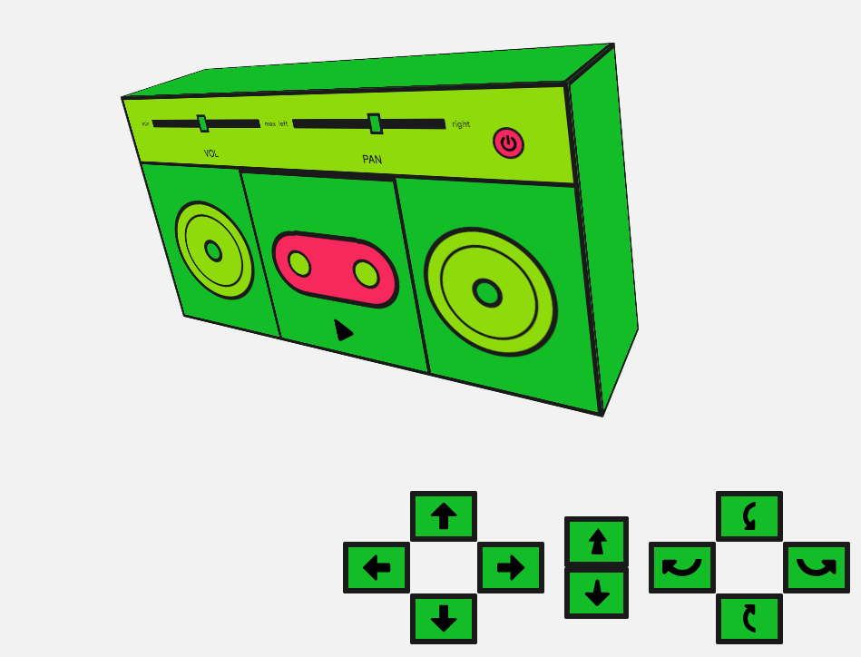

As if its extensive variety of sound processing (and other) options wasn't enough, the Web Audio API also includes facilities to allow you to emulate the difference in sound as a listener moves around a sound source, for example panning as you move around a sound source inside a 3D game. The official term for this is spatialization, and this article will cover the basics of how to implement such a system.
In Web Audio, complex 3D spatializations are created using the {{domxref("PannerNode")}}, which in layman's terms is basically a whole lotta cool maths to make audio appear in 3D space. Think sounds flying over you, creeping up behind you, moving across in front of you. That sort of thing.
It's really useful for WebXR and gaming. In 3D spaces, it's the only way to achieve realistic audio. Libraries like three.js and A-frame harness its potential when dealing with sound. It's worth noting that you don't have to move sound within a full 3D space either — you could stick with just a 2D plane, so if you were planning a 2D game, this would still be the node you were looking for.
Note: There's also a {{domxref("StereoPannerNode")}} designed to deal with the common use case of creating simple left and right stereo panning effects. This is much simpler to use, but obviously nowhere near as versatile. If you just want a simple stereo panning effect, our StereoPannerNode example (see source code) should give you everything you need.
To demonstrate 3D spatialization we've created a modified version of the boombox demo we created in our basic Using the Web Audio API guide. see the 3D spatialization demo live (and see the source code also).

The boombox sits inside a room (defined by the edges of the browser viewport), and in this demo, we can move and rotate it with the provided controls. When we move the boombox, the sound it produces changes accordingly, panning as it moves to the left or right of the room, or becoming quieter as it is moved away from the user or is rotated so the speakers are facing away from them, etc. This is done by setting the different properties of the PannerNode object instance in relation to that movement, to emulate spacialization.
Note: The experience is much better if you use headphones, or have some kind of surround sound system to plug your computer into.
So let's begin! The {{domxref("BaseAudioContext")}} (the interface the {{domxref("AudioContext")}} is extended from) has a listener property that returns an {{domxref("AudioListener")}} object. This represents the listener of the scene, usually your user. You can define where they are in space and in which direction they are facing. They remain static. The pannerNode can then calculate its sound position relative to the position of the listener.
Let's create our context and listener and set the listener's position to emulate a person looking into our room:
const AudioContext = window.AudioContext || window.webkitAudioContext; const audioCtx = new AudioContext(); const listener = audioCtx.listener; const posX = window.innerWidth/2; const posY = window.innerHeight/2; const posZ = 300; listener.positionX.value = posX; listener.positionY.value = posY; listener.positionZ.value = posZ-5;
We could move the listener left or right using positionX, up or down using positionY, or in or out of the room using positionZ. Here we are setting the listener to be in the middle of the viewport and slightly in front of our boombox. We can also set the direction the listener is facing. The default values for these work well:
listener.forwardX.value = 0; listener.forwardY.value = 0; listener.forwardZ.value = -1; listener.upX.value = 0; listener.upY.value = 1; listener.upZ.value = 0;
The forward properties represent the 3D coordinate position of the listener's forward direction (e.g. the direction they are facing in), while the up properties represent the 3D coordinate position of the top of the listener's head. These two together can nicely set the direction.
Let's create our {{domxref("PannerNode")}}. This has a whole bunch of properties associated with it. Let's take a look at each of them:
To start we can set the panningModel. This is the spacialization algorithm that's used to position the audio in 3D space. We can set this to:
equalpower — The default and the general way panning is figured out
HRTF — This stands for 'Head-related transfer function' and looks to take into account the human head when figuring out where the sound is.
Pretty clever stuff. Let's use the HRTF model!
const pannerModel = 'HRTF';
The coneInnerAngle and coneOuterAngle properties specify where the volume emanates from. By default, both are 360 degrees. Our boombox speakers will have smaller cones, which we can define. The inner cone is where gain (volume) is always emulated at a maximum and the outer cone is where the gain starts to drop away. The gain is reduced by the value of the coneOuterGain value. Let's create constants that store the values we'll use for these parameters later on:
const innerCone = 60; const outerCone = 90; const outerGain = 0.3;
The next parameter is distanceModel — this can only be set to linear, inverse, or exponential. These are different algorithms, which are used to reduce the volume of the audio source as it moves away from the listener. We'll use linear, as it is simple:
const distanceModel = 'linear';
We can set a maximum distance (maxDistance) between the source and the listener — the volume will not be reduced anymore if the source moves further away from this point. This can be useful, as you may find you want to emulate distance, but volume can drop out and that's actually not what you want. By default, it's 10,000 (a unitless relative value). We can keep it as this:
const maxDistance = 10000;
There's also a reference distance (refDistance), which is used by the distance models. We can keep that at the default value of 1 as well:
const refDistance = 1;
Then there's the roll-off factor (rolloffFactor) — how quickly does the volume reduce as the panner moves away from the listener. The default value is 1; let's make that a bit bigger to exaggerate our movements.
const rollOff = 10;
Now we can start setting our position and orientation of our boombox. This is a lot like how we did it with our listener. These are also the parameters we're going to change when the controls on our interface are used.
const positionX = posX; const positionY = posY; const positionZ = posZ; const orientationX = 0.0; const orientationY = 0.0; const orientationZ = -1.0;
Note the minus value on our z orientation — this sets the boombox to face us. A positive value would set the sound source facing away from us.
Let's use the relevant constructor for creating our panner node and pass in all those parameters we set above:
const panner = new PannerNode(audioCtx, {
panningModel: pannerModel,
distanceModel: distanceModel,
positionX: positionX,
positionY: positionY,
positionZ: positionZ,
orientationX: orientationX,
orientationY: orientationY,
orientationZ: orientationZ,
refDistance: refDistance,
maxDistance: maxDistance,
rolloffFactor: rollOff,
coneInnerAngle: innerCone,
coneOuterAngle: outerCone,
coneOuterGain: outerGain
})
Now we're going to move our boombox around our 'room'. We've got some controls set up to do this. We can move it left and right, up and down, and back and forth; we can also rotate it. The sound direction is coming from the boombox speaker at the front, so when we rotate it, we can alter the sound's direction — i.e. make it project to the back when the boombox is rotated 180 degrees and facing away from us.
We need to set up a few things for the interface. First, we'll get references to the elements we want to move, then we'll store references to the values we'll change when we set up CSS transforms to actually do the movement. Finally, we'll set some bounds so our boombox doesn't move too far in any direction:
const moveControls = document.querySelector('#move-controls').querySelectorAll('button');
const boombox = document.querySelector('.boombox-body');
// the values for our css transforms
let transform = {
xAxis: 0,
yAxis: 0,
zAxis: 0.8,
rotateX: 0,
rotateY: 0
}
// set our bounds
const topBound = -posY;
const bottomBound = posY;
const rightBound = posX;
const leftBound = -posX;
const innerBound = 0.1;
const outerBound = 1.5;
Let's create a function that takes the direction we want to move as a parameter, and both modifies the CSS transform and updates the position and orientation values of our panner node properties to change the sound as appropriate.
To start with let's take a look at our left, right, up and down values as these are pretty straightforward. We'll move the boombox along these axis and update the appropriate position.
function moveBoombox(direction) {
switch (direction) {
case 'left':
if (transform.xAxis > leftBound) {
transform.xAxis -= 5;
panner.positionX.value -= 0.1;
}
break;
case 'up':
if (transform.yAxis > topBound) {
transform.yAxis -= 5;
panner.positionY.value -= 0.3;
}
break;
case 'right':
if (transform.xAxis < rightBound) {
transform.xAxis += 5;
panner.positionX.value += 0.1;
}
break;
case 'down':
if (transform.yAxis < bottomBound) {
transform.yAxis += 5;
panner.positionY.value += 0.3;
}
break;
}
}
It's a similar story for our move in and out values too:
case 'back':
if (transform.zAxis > innerBound) {
transform.zAxis -= 0.01;
panner.positionZ.value += 40;
}
break;
case 'forward':
if (transform.zAxis < outerBound) {
transform.zAxis += 0.01;
panner.positionZ.value -= 40;
}
break;
Our rotation values are a little more involved, however, as we need to move the sound around. Not only do we have to update two axis values (e.g. if you rotate an object around the x-axis, you update the y and z coordinates for that object), but we also need to do some more maths for this. The rotation is a circle and we need Math.sin and Math.cos to help us draw that circle.
Let's set up a rotation rate, which we'll convert into a radian range value for use in Math.sin and Math.cos later, when we want to figure out the new coordinates when we're rotating our boombox:
// set up rotation constants const rotationRate = 60; // bigger number equals slower sound rotation const q = Math.PI/rotationRate; //rotation increment in radians
We can also use this to work out degrees rotated, which will help with the CSS transforms we will have to create (note we need both an x and y-axis for the CSS transforms):
// get degrees for css const degreesX = (q * 180)/Math.PI; const degreesY = (q * 180)/Math.PI;
Let's take a look at our left rotation as an example. We need to change the x orientation and the z orientation of the panner coordinates, to move around the y-axis for our left rotation:
case 'rotate-left': transform.rotateY -= degreesY; // 'left' is rotation about y-axis with negative angle increment z = panner.orientationZ.value*Math.cos(q) - panner.orientationX.value*Math.sin(q); x = panner.orientationZ.value*Math.sin(q) + panner.orientationX.value*Math.cos(q); y = panner.orientationY.value; panner.orientationX.value = x; panner.orientationY.value = y; panner.orientationZ.value = z; break;
This is a little confusing, but what we're doing is using sin and cos to help us work out the circular motion the coordinates need for the rotation of the boombox.
We can do this for all the axes. We just need to choose the right orientations to update and whether we want a positive or negative increment.
case 'rotate-right': transform.rotateY += degreesY; // 'right' is rotation about y-axis with positive angle increment z = panner.orientationZ.value*Math.cos(-q) - panner.orientationX.value*Math.sin(-q); x = panner.orientationZ.value*Math.sin(-q) + panner.orientationX.value*Math.cos(-q); y = panner.orientationY.value; panner.orientationX.value = x; panner.orientationY.value = y; panner.orientationZ.value = z; break; case 'rotate-up': transform.rotateX += degreesX; // 'up' is rotation about x-axis with negative angle increment z = panner.orientationZ.value*Math.cos(-q) - panner.orientationY.value*Math.sin(-q); y = panner.orientationZ.value*Math.sin(-q) + panner.orientationY.value*Math.cos(-q); x = panner.orientationX.value; panner.orientationX.value = x; panner.orientationY.value = y; panner.orientationZ.value = z; break; case 'rotate-down': transform.rotateX -= degreesX; // 'down' is rotation about x-axis with positive angle increment z = panner.orientationZ.value*Math.cos(q) - panner.orientationY.value*Math.sin(q); y = panner.orientationZ.value*Math.sin(q) + panner.orientationY.value*Math.cos(q); x = panner.orientationX.value; panner.orientationX.value = x; panner.orientationY.value = y; panner.orientationZ.value = z; break;
One last thing — we need to update the CSS and keep a reference of the last move for the mouse event. Here's the final moveBoombox function.
function moveBoombox(direction, prevMove) {
switch (direction) {
case 'left':
if (transform.xAxis > leftBound) {
transform.xAxis -= 5;
panner.positionX.value -= 0.1;
}
break;
case 'up':
if (transform.yAxis > topBound) {
transform.yAxis -= 5;
panner.positionY.value -= 0.3;
}
break;
case 'right':
if (transform.xAxis < rightBound) {
transform.xAxis += 5;
panner.positionX.value += 0.1;
}
break;
case 'down':
if (transform.yAxis < bottomBound) {
transform.yAxis += 5;
panner.positionY.value += 0.3;
}
break;
case 'back':
if (transform.zAxis > innerBound) {
transform.zAxis -= 0.01;
panner.positionZ.value += 40;
}
break;
case 'forward':
if (transform.zAxis < outerBound) {
transform.zAxis += 0.01;
panner.positionZ.value -= 40;
}
break;
case 'rotate-left':
transform.rotateY -= degreesY;
// 'left' is rotation about y-axis with negative angle increment
z = panner.orientationZ.value*Math.cos(q) - panner.orientationX.value*Math.sin(q);
x = panner.orientationZ.value*Math.sin(q) + panner.orientationX.value*Math.cos(q);
y = panner.orientationY.value;
panner.orientationX.value = x;
panner.orientationY.value = y;
panner.orientationZ.value = z;
break;
case 'rotate-right':
transform.rotateY += degreesY;
// 'right' is rotation about y-axis with positive angle increment
z = panner.orientationZ.value*Math.cos(-q) - panner.orientationX.value*Math.sin(-q);
x = panner.orientationZ.value*Math.sin(-q) + panner.orientationX.value*Math.cos(-q);
y = panner.orientationY.value;
panner.orientationX.value = x;
panner.orientationY.value = y;
panner.orientationZ.value = z;
break;
case 'rotate-up':
transform.rotateX += degreesX;
// 'up' is rotation about x-axis with negative angle increment
z = panner.orientationZ.value*Math.cos(-q) - panner.orientationY.value*Math.sin(-q);
y = panner.orientationZ.value*Math.sin(-q) + panner.orientationY.value*Math.cos(-q);
x = panner.orientationX.value;
panner.orientationX.value = x;
panner.orientationY.value = y;
panner.orientationZ.value = z;
break;
case 'rotate-down':
transform.rotateX -= degreesX;
// 'down' is rotation about x-axis with positive angle increment
z = panner.orientationZ.value*Math.cos(q) - panner.orientationY.value*Math.sin(q);
y = panner.orientationZ.value*Math.sin(q) + panner.orientationY.value*Math.cos(q);
x = panner.orientationX.value;
panner.orientationX.value = x;
panner.orientationY.value = y;
panner.orientationZ.value = z;
break;
}
boombox.style.transform = 'translateX('+transform.xAxis+'px) translateY('+transform.yAxis+'px) scale('+transform.zAxis+') rotateY('+transform.rotateY+'deg) rotateX('+transform.rotateX+'deg)';
const move = prevMove || {};
move.frameId = requestAnimationFrame(() => moveBoombox(direction, move));
return move;
}
Wiring up out control buttons is comparatively simple — now we can listen for a mouse event on our controls and run this function, as well as stop it when the mouse is released:
// for each of our controls, move the boombox and change the position values
moveControls.forEach(function(el) {
let moving;
el.addEventListener('mousedown', function() {
let direction = this.dataset.control;
if (moving && moving.frameId) {
window.cancelAnimationFrame(moving.frameId);
}
moving = moveBoombox(direction);
}, false);
window.addEventListener('mouseup', function() {
if (moving && moving.frameId) {
window.cancelAnimationFrame(moving.frameId);
}
}, false)
})
Our HTML contains the audio element we want to be affected by the panner node.
<audio src="myCoolTrack.mp3"></audio>
We need to grab the source from that element and pipe it into the Web Audio API using the {{domxref('AudioContext.createMediaElementSource')}}.
// get the audio element
const audioElement = document.querySelector('audio');
// pass it into the audio context
const track = audioContext.createMediaElementSource(audioElement);
Next we have to connect our audio graph. We connect our input (the track) to our modification node (the panner) to our destination (in this case the speakers).
track.connect(panner).connect(audioCtx.destination);
Let's create a play button, that when clicked will play or pause the audio depending on the current state.
<button data-playing="false" role="switch">Play/Pause</button>
// select our play button
const playButton = document.querySelector('button');
playButton.addEventListener('click', function() {
// check if context is in suspended state (autoplay policy)
if (audioContext.state === 'suspended') {
audioContext.resume();
}
// play or pause track depending on state
if (this.dataset.playing === 'false') {
audioElement.play();
this.dataset.playing = 'true';
} else if (this.dataset.playing === 'true') {
audioElement.pause();
this.dataset.playing = 'false';
}
}, false);
For a more in depth look at playing/controlling audio and audio graphs check out Using The Web Audio API.
Hopefully, this article has given you an insight into how Web Audio spatialization works, and what each of the {{domxref("PannerNode")}} properties do (there are quite a few of them). The values can be hard to manipulate sometimes and depending on your use case it can take some time to get them right.
Note: There are slight differences in the way the audio spatialization sounds across different browsers. The panner node does some very involved maths under the hood; there are a number of tests here so you can keep track of the status of the inner workings of this node across different platforms.
Again, you can check out the final demo here, and the final source code is here. There is also a Codepen demo too.
If you are working with 3D games and/or WebXR it's a good idea to harness a 3D library to create such functionality, rather than trying to do this all yourself from first principles. We rolled our own in this article to give you an idea of how it works, but you'll save a lot of time by taking advantage of work others have done before you.